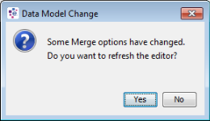

Merge
The Merge process is designed to ease the binding of imported content to the target solution.
| In this section, Logical Data Sources, Logical Data Model characteristics and Logical Data Source characteristics will be referred to as 'Data Model components'. |
The source Data Model components can come from various sources such as a component template, an imported component or a component that exists in the current solution.
For example, by using the Merge process a user can combine the Logical Data Source characteristics used by an imported component such as a Treatment Table with those in the target solution.
The Merge editor allows the user to define the mappings between the source and target Data Model components including their Data Views (if any).
When the mappings have been defined the Merge process will perform some or all of the following action(s):
- Mapped source characteristics that exist in any component including those components that only use references to these characteristics (e.g. Derived Data Script) will be replaced with the target characteristics.
- The source characteristics marked as new will be created in their defined target destination (Logical Data Source or Logical Data Model characteristics).
|
The following components will require a manual merge in order to integrate them successfully into the target solution:
|
|
|
Derived Data Script will have their direct references to a Logical Data Source updated with the Merge process. |
The following components that may contain direct references to a Logical Data Source will not be updated:
| Annotation Model | Index Table | Report Definition | Test Group |
| Assisted Design Project | Input Data Connection | Report Scorecard Mapping | Transformation Function |
| Call Interface | Java Object Physical Data Model | Results Data Definition | Treatment Table Design |
| Class Set | Marketswitch Optimized Decision | Scorecard | Value Setter |
| The Merge process may affect components that do not support dynamic array characteristics. Therefore, it is not recommended to map static characteristic or static array characteristic to characteristics that contain dynamic arrays in their Path. |
| When the Merge process is being used in a multi-user environment, all the Data Model dependencies (e.g. Entity Models, Logical Data Sources, Logical Data Models, Data Views etc) should be locked during the process of merging (from configuration to Apply). |
After the Merge process all components that previously used the source Data Model components including their Data Views (if any) will now use the newly merged target Data Model components and their target Data Views. This does not include those components that are not supported by the Merge process.
For more information on using the Merge process refer to the Global Resource Library.
|
Only users with the Architect functional role and access to the Content and Solution Repositories will be able to use the Merge editor. |
|
|
Ensure the source Logical Data Sources have been loaded into your solution, see Add From Template topic for more information. |
| When the Merge process is being used in a multi-user environment, all the Data Model dependencies (e.g. Entity Models, Logical Data Sources, Logical Data Models, Data Views etc.) should be locked during the process of merging (from configuration to Apply). |
The following are all examples of different types of merges:
The Merge editor allows the user to define the mappings between a source and target Data Model components including their Data Views (if any) using manual selection.
To merge a source characteristic into a target characteristic using manual selection
- Within the Explorer window, right click on the name of the source Logical Data Source(s) that you wish to use and select Merge. The Merge editor is displayed with all the characteristics and Logical Data Models contained in the selected Logical Data Source(s) listed in the Characteristic Mapping panel.
- Within the Characteristic Mapping panel of the editor, select a source Data Model component(s) that you wish to perform a manual target mapping.
- Select a target component by using one of the following manual options (a or b):
a. Select a target component based on a Match score percentageor
Within the Auto-Match tab of the Target Selection panel, right click on a target component and select Map in the context menu (or double click on the row or use the Map button in the tool bar).
b. Navigate to a target component destinationThe editor panels are updated with the selected target component mapping details including their Data Views (if any). These details are displayed in the Characteristic Mapping panel Status, Target columns and the Data View Mapping panel source and target.In the Manual Selection tab, the entire target Logical Data Sources and their characteristics are visible but some characteristics cannot be mapped. See the Information area in the Target Selection panel for the mapping detail mismatches (e.g. Length mismatch - 3 instead of 30). Within the Manual Select tab of the Target Selection panel, navigate to the target component destination, right click and select Map in the context menu (or double click on the row or use the Map button in the tool bar).
| Step 4 is only applicable for an Originations or Connectivity and Enrichment solution that contains Data View components. Go to step 7 for all other solutions. |
- In the Characteristic Mappings panel, for each mapped source Data Model component select their associated check box to make it ‘Ready’ for the Merge process. During the Merge process only source components with a Ready status will be merged. For multi selection you can use either the Ready button from the tool bar or the Toggle Ready action from the context menu.
- Repeat step 2 to step 4 to map and set ready all the required source Data model components.
|
Before applying the Merge process it is highly recommended to check your Data Model component mappings are correct (including their Data Views). |
- Click on the Apply button in the Characteristic Mappings panel toolbar to execute the Merge process.
The Merge Editor Apply Wizard will be displayed. - If the Entity Model mapping is available, select the target Entity Model to apply to the source Entity Model from the Entity Model mapping area.
- To launch the Move to Recycle Bin Wizard after the Merge process, select the check box within the Post-merge process area.
- If you wish to execute the Merge process without viewing the preview click on the Finish button.
- To preview the changes or exclude some components before executing the Merge process, click on the Next button.
The Pre-process screen will be displayed. - To exclude components from the Merge process, uncheck the corresponding check box in the Components tab.
Details about the changes are available in the different tabs (Components, Mappings, Log). - To save the information as an XML file, select the tab you wish to export and click on the Export icon from the toolbar.
- Click on the Next button.
The Confirm screen will be displayed. - Click on the Next button.
The Report screen will be displayed. - Click on the Finish button to complete the Merge process.
- Repeat from step 1 for the next source Logical Data Source(s) that needs to be merged.
After the Merge process all components that previously used the source Data Model components including their Data Views (if any) will now use the newly merged target Data Model components and their target Data Views. This does not include those components that are not supported by the Merge process.
The Merge editor allows the user to define the mappings between a source and target Data Model components including their Data Views (if any) automatically.
To merge a source characteristic into a target characteristic using Automap
The Automap process can be triggered for one or several selected source components. It can also be triggered after selecting a Logical Data Source (their characteristics are also considered in the process).
- Within the Explorer window, right click on the name of the source Logical Data Source(s) that you wish to use and select Merge. The Merge editor is displayed with all the characteristics and Logical Data Models contained in the selected Logical Data Source(s) listed in the Characteristic Mapping panel.
- Within the Characteristic Mapping panel of the editor, select a source Data Model component(s) that you wish to perform an Automap target mapping.
- Right click on any row to access the context menu (or use the Automap button on the tool bar), select Automap and then choose an Automap option of your choice (e.g. History or Perfect only or Best Candidate). The editor panels are updated with the selected target component mapping details including their Data Views (if any). These details are displayed in the Characteristic Mapping panel Status, Target columns and the Data View Mapping panel source and target.
| Step 4 is only applicable for an Origination or Connectivity and Enrichment solution that contains Data View components. Go to step 7 for all other solutions. |
- During the mapping action all Data Views are mapped automatically. Ensure that all the target Data Views in the Target column from the Data View Mapping panel are correct and update as required. Steps 5 and 6 describe how these amendments can be made.
- Select a source component in the Characteristic Mappings panel that you wish to perform a Data View mapping.
- Select a target Data View by double clicking on a Target row to access the candidate Data View(s) drop-down list.
- In the Characteristic Mappings panel, for each mapped source Data Model component select their associated check box to make it ‘Ready’ for the Merge process. During the Merge process only source components with a Ready status will be merged. For multi selection you can use either the Ready button from the tool bar or the Toggle Ready action from the context menu.
| To unselect a target Data View mapping use the Unmap option, either right click to access the context menu or the Unmap button on the tool bar. |
- Repeat step 2 to step 7 to map and set ready all the required source Data model components.
| Before applying the Merge process it is highly recommended to check your Data Model component mappings are correct (including their Data Views). |
- Click on the Apply button in the Characteristic Mappings panel toolbar to perform the Merge process.
The Merge Editor Apply Wizard will be displayed. - If the Entity Model mapping is available, select the target Entity Model to apply to the source Entity Model from the Entity Model mapping area.
- To launch the Move to Recycle Bin Wizard after the Merge process, select the check box within the Post-merge process area.
- If you wish to execute the Merge process without viewing the preview click on the Finish button.
- To preview the changes or exclude some components before executing the Merge process, click on the Next button.
The Pre-process screen will be displayed. - To exclude components from the Merge process, uncheck the corresponding check box in the Components tab.
Details about the changes are available in the different tabs (Components, Mappings, Log). - To save the information as an XML file, select the tab you wish to export and click on the Export icon from the toolbar.
- Click on the Next button.
The Confirm screen will be displayed. - Click on the Next button.
The Report screen will be displayed. - Click on the Finish button to complete the Merge process.
- Repeat from step 1 for the next source Logical Data Source(s) that needs to be merged.
After the Merge process all components that previously used the source Data Model components including their Data Views (if any) will now use the newly merged target Data Model components and their target Data Views. This does not include those components that are not supported by the Merge process.
The Merge editor allows the user to create a new target characteristic in the selected target destination based on the source characteristic. This also includes their Data Views (if any).
| Data View components are only available in an Originations or Connectivity and Enrichment Solution. |
To create a new target characteristic into a target destination using manual selection
- Within the Explorer window, right click on the name of the source Logical Data Source(s) that you wish to use and select Merge. The Merge editor is displayed with all the characteristics and Logical Data Models contained in the selected Logical Data Source(s) listed in the Characteristic Mapping panel.
- Within the Characteristic Mapping panel of the editor, select a source Data Model component(s) that you wish to perform a manual target mapping.
- Within the Manual Select tab of the Target Selection panel, navigate to the Parent target component destination, right click and select New from the context menu (or double click on the row or use the Map button in the tool bar). A green
 cross indicates that a new target component will be created in the selected target component destination during the Merge process.
cross indicates that a new target component will be created in the selected target component destination during the Merge process.

| Step 4 is only applicable for an Origination or Connectivity and Enrichment solution that contains Data View components. Go to step 7 for all other solutions. |
- During the mapping action all Data Views are mapped automatically. Ensure that all the target Data Views in the Target column from the Data View Mapping panel are correct and update as required. Steps 5 and 6 describe how these amendments can be made.
- Select a source component in the Characteristic Mappings panel that you wish to perform a Data View mapping.
- Select a target Data View by double clicking on a Target row to access the candidate Data View(s) drop-down list.
| To unselect a target Data View mapping use the Unmap option, either right click to access the context menu or the Unmap button on the tool bar. |
- In the Characteristic Mappings panel, for each mapped source Data Model component select their associated check box to make it ‘Ready’ for the Merge process. During the Merge process only source components with a Ready status will be merged. For multi selection you can use either the Ready button from the tool bar or the Toggle Ready action from the context menu.
- Repeat step 2 to step 7 to map and set ready all the required source Data model components.
| Before applying the Merge process it is highly recommended to check your Data Model component mappings are correct (including their Data Views). |
- Click on the Apply button in the Characteristic Mappings panel toolbar to perform the Merge process.
The Merge Editor Apply Wizard will be displayed. - If the Entity Model mapping is available, select the target Entity Model to apply to the source Entity Model from the Entity Model mapping area.
- To launch the Move to Recycle Bin Wizard after the Merge process, select the check box within the Post-merge process area.
- If you wish to execute the Merge process without viewing the preview click on the Finish button.
- To preview the changes or exclude some components before executing the Merge process, click on the Next button.
The Pre-process screen will be displayed. - To exclude components from the Merge process, uncheck the corresponding check box in the Components tab.
Details about the changes are available in the different tabs (Components, Mappings, Log). - To save the information as an XML file, select the tab you wish to export and click on the Export icon from the toolbar.
- Click on the Next button.
The Confirm screen will be displayed. - Click on the Next button.
The Report screen will be displayed. - Click on the Finish button to complete the Merge process.
- Repeat from step 1 for the next source Logical Data Source(s) that needs to be merged.
After the Merge process all components that previously used the source Data Model components including their Data Views (if any) will now use the newly merged target Data Model components and their target Data Views. This does not include those components that are not supported by the Merge process.
The Data View mapping panel allows the user to map a target Data View to a Data View from the selected source Data Model component.
To avoid performing repetitive Data View mappings, the user can copy a set of target and source Data View mappings and paste them into a source Data Model component(s) in the Characteristic Mapping panel.
| Data View components are only available in an Originations or Connectivity and Enrichment Solution. |
To copy and paste a set of target and source Data View mappings
- Within the Data View Mapping panel from the Merge editor, select a set of Data View mapping(s) that you wish to copy.
- Select the Copy
 button on the toolbar
button on the toolbar - From the Characteristic Mapping panel select the source characteristic(s) that you wish to paste into.
- Right click and select 'Paste DataViews' from the contextual menu (or use the Paste button on the toolbar).
| If nothing is selected in the Source column then all the mapping will be copied. |

If a selected source Data Model component(s) does not have Data Views with the same name then the paste will not be carried out.
For each matching source Data View their target Data View will be replaced by the copied target Data View.
The Matching Options view allows the user to:
- customise the matching algorithm used in the Auto-Match tab of the Merge editor’s Target Selection panel
- set the threshold for the candidate characteristic results returned by the Automap 'Best Candidate' action using the Trust score for the Characteristic Mapping panel in the Merge editor
- set the threshold for the candidate characteristic displayed in the Auto-Match tab table of the Merge editor’s Target Selection panel using the Visibility score
| Changing the Merge editor Matching Options will impact the candidate characteristic match score and its ordering displayed in the Match score table of the Auto-Match tab. |

The Merge tab in the Matching Options consists of:
Algorithm used for text comparison field:
Algorithm Levenshtein – calculates a score based on the differences between two strings
Other algorithms may be available in future releases of the software.
Characteristic matching options:
This area allows the user to determine what properties need to be matched and how strict these matches need to be.
Characteristic property check boxes – select the check box that you wish to include into the candidate characteristics match score calculation.
To change the characteristic property matching order, use the Up or Down arrows. The property listed at the top will take precedence.
Characteristic property field – set the following parameters for each of the selected Characteristic properties:
- Exact Match - select this check box to return an individual score of 100 if the property is the same or else returns zero.
- Factor - set the individual score by a factor value (range from 1 to 100) giving more importance or weight to a property when compared to another.
- Exit Threshold - set the individual threshold value (range from 1 to 100). If the individual score does not reach this threshold the calculation is stopped and the final score for this characteristic is set to zero.
- Case Sensitive - select this check box to make the Match score calculation case sensitive
A candidate characteristic property is assigned with an individual match score based on its comparison to the same property from the source characteristic property. The final match score is the sum of all of the individual scores unless an ‘Exit threshold’ is triggered in the process. The average of the individual match score will provide the final score to the matching candidates. The candidate characteristic can be used as the target characteristic (displayed in the Characteristic Mapping panel).
This area allows the user to set the target characteristics Trust and Visibility scores:

Trust Score - either slide the level indicator or use the Up and Down arrows to set the minimum percentage score (range from 0% to 99%). This score is used by the Best Candidate action when performing an Automap. A candidate characteristic with a score lower than the defined percentage (for example, 74%) will be ignored.
Visibility Score - either slide the level indicator or use the Up and Down arrows to set the minimum percentage threshold. A candidate characteristic below the defined score (for example, 25%) is not displayed.
For details on how to change the Merge editor matching parameters, refer to:
This is used to change the Merge editor matching parameters.
To configure the matching options used in the Merge editor
- In the Target Selection panel of the Merge editor either click on the Matching Options button or select from the Main menu bar - Tools – Options - Matching. The Merge tab is displayed.
- For each of the selected candidate characteristic matching options (for example, Name, Path, Scale, Name), change its settings as necessary.
- In the Matching Visibility section, set the Trust Score and or the Visibility Score, either by sliding the level indicator or using the Up and Down arrows.
- Click Apply to save the changes (the dialog will remain opened) or click OK (the changes will also be saved but the dialog will be closed). Regardless of which option has been chosen, the following dialog will be displayed.
- Click Yes.
- Click OK to close the Options dialog.
{kind=link}
| Changing the candidate characteristic properties will have an impact on the performance of the Merge editor. For example, if the Path property is not required removing it will improve the Merge editor performance. |
| Unused source characteristics are not removed if the Merge process does not merge at least one characteristic. |
{kind=link}

There are two options:
- reloads the Merge editor using the options you have defined (the Options dialog remains on display)
{kind=link}
- closes the Data Model Change dialog without reloading the Merge editor (the Options dialog remains on display)
{kind=link}
The Merge editor will reload using the options you have defined to recalculate the Automap results displayed in the Target Selection panel.